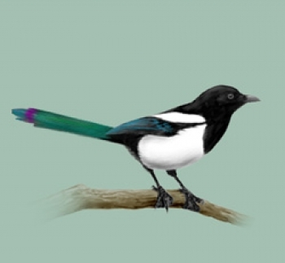

Sójka

Nieco mniejsza od sroki sójka charakteryzuje się błękitnymi w czarne prążki i białymi lusterkami na zaokrąglonych skrzydłach oraz białawym kuprem. Błękit tworzą pióra pokrywowe, które w rzeczywistości błękitne nie są; ich kolor bierze się stąd, że wiązka światła rozszczepia się w specjalnej strukturze pióra i odbite zostaje światło niebieskie. Wierzch ciała sójki jest brązowawy, z pastelowym odcieniem różu. Czoło jest białe, z czarnym kreskowaniem, od dzioba odchodzą czarne wąsy. Jest to bez wątpienia najładniej ubarwiony ptak z rodziny krukowatych.
Kos

Gil
Raniuszek

Sroka
